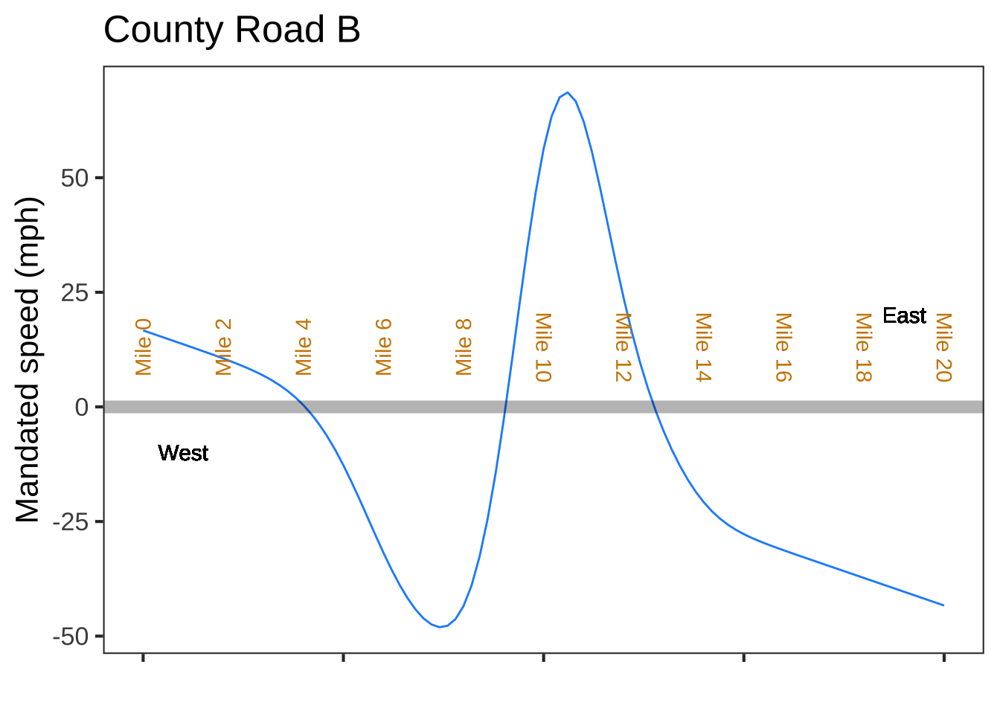

Chapter 50 Flows on the line
- Classify fixed points as stable/unstable given the dynamics
- Identify the dynamics of constant growth
- Compute Euler solutions (format for expressing the system and the format of the result)
- Analyze models in application contexts (for example May’s Cows - a model of bistability in ecology)
- Examples of linearization: Newton’s Law of Cooling, Hooke’s Law
Last year’s daily digitals from DD-15 to about DD-20
The first chapter of this Block introduced a framework for modeling dynamics in continuous time: a dynamical state variables and dynamical functions giving the instantaneous change of each state variable as a function of the values of the state variables at that instant. The second chapter covered several methods of extracting a solution from the model, that is, a function of time for each of the state variables that is consistent with the differential equations. We looked at the solution in two ways: a trajectory in state space or a time-series graph.
Ultimately, our goal is to make models of real-world systems. These models can enhance our understanding of the mechanisms active in the real world. The models can also make predictions of various sorts. But you are not yet in a position to know what “various sorts” of predictions can mean or to see how to construct a dynamical model. To get you there, you’ll need to learn about some general features of dynamical systems that allow us to think about them at a high level.
We start with the simplest sort of dynamical system: first-order systems, that is, ones with a single state variable. With a single variable, the state space is one-dimensional: the number line.
50.1 The rules of the road
A physical analogy to give a better intuition about dynamics in a one-dimensional state space. We’ll imagine that the state space is represented by a road, the instantaneous state being the location of a car along that road.
On a real road, the motion of the car is set by the driver using the accelerator and brakes and constrained by other traffic and road conditions. In our state-space road, the velocity of the car is strictly dictated by an authoritarian government law: no exceptions. When the dictated speed is zero, the car will stand still and cannot start moving again. Ultimately, depending on the shape of the law, the car will head off to infinity or come to an eternal standstill. Two different cars can never collide on this road: if the cars are close together, they must be travelling at similar velocities. Cars can’t pass one another in different directions. Passing requires that the two cars have opposite velocities: one positive and one negative. If the mandated velocity at a point along the road is positive, every car that comes to that point must have the same positive velocity as it passes that point in the road.
The diagram in Figure ?? shows one possible format for describing the regulations for a road. The road is shown as a grey line. The red numbers are mile-markers alongside the road. The function graph shows the mandated speed at any point: you can read off the numerical value of the mandated speed on the y-axis.

To better visualize the flow of traffic on the road, in Figure 50.1 we draw vectors on the road. The direction of each vector will be either east or west; the length of the vector gives the required speed for a car passing that point.
Figure 50.1: The mandatory speed on the road.
Cars arriving from the west are obliged to stop their journey at about \(x=4\) where the arrows switch direction. Similarly, cars arriving from the east will be driving west, but their journey has a different destination, mile 13, where the velocity regulations change direction. The easterners will be obliged to stop at the point where the left-facing arrows meet the right-facing ones. A car starting near mile 10 will be obliged to drive east but can go only to mile 13; a car starting at mile 7 will drive west until reaching mile 4.
This is a lot of detail in the shape of the dynamical function—I mean, the road regulations. So far as the consequences of the road regulations go, the situation is simpler: cars standing still at mile 4 or at mile 13, depending on where they started from.
Zooming in on the dynamics near mile 4 or 13 helps to show what happens as the cars approach those points. (Figure 50.2) At either point, the action is similar. Cars coming from the west have to slow down as the arrows get smaller. Similarly for cars from the east. Where east meets west the cars are forced to a standstill; in order for the vectors to have different directions on the west end of the road than on the east end, the length of the vectors has to go to zero.
Figure 50.2: The road regulations near mile-markers 4 and 13. The fixed point is marked with a small dot.
Such a point in the state space, where the flow arrows converge, is called a stable fixed point. The “fixed” merely means that the cars come to a standstill. “Stable” means that all cars starting near the fixed point are heading toward that point. Many details of the dynamics near the fixed point have no role in the eventual outcome. For instance, the dynamical function near mile-marker 4 is concave down, while that at mile-marker 13 is concave up. In both cases the behavior of the system is the same: convergence at the stable fixed point.
Newcomers understandably endow the car-on-road or bead-on-wire analogies to the state space of a first-order system with other familiar properties of the real world. For instance, a real-world wire has friction which needs to be overcome by applying a force. A real-world car has momentum which prolongs motion even after force has been applied. As you will see, a differential equation system that involves force and momentum requires a two-dimensional (or higher) state space.
There is another fixed point on the road, but the behavior near it is different. Figure 50.3 zooms in on the situation near mile-marker 9. The outcome of the dynamics is very different than near miles 4 and 13. The fixed point near mile 9 is unstable. This means that any cars starting near the fixed point will drive away. Slowly at first and then faster as they get farther from the fixed point.
Figure 50.3: An unstable fixed point in the road regulations.
It’s an interesting philosophical question what happens to a car starting exactly on the fixed point. Since the velocity vector there has zero length, the car must stand still. But if the car happens to move one jot away from the fixed point, it will start to speed up and move away from the fixed point.
The ideas of fixed points and their stability provides a much more concise description of the dynamical system: “There are stable fixed points near mile 4 and mile 13, as well as an unstable fixed point near mile 9.”
It’s worth pointing out a consequence of the mathematics of continuous functions: if a system with a continuous dynamical function has a region of state space with two different fixed points, there must be an unstable fixed point in between them.
50.2 Linearization
“Stable” and “unstable” provide a useful qualitative indication of the dynamics near a fixed point. An approximate quantitative solution can also be found.
Recall that any continuous function can be approximated locally by a low-order polynomial. For a function \(g(x)\) with only one input, “locally” means “near \(x^\star\),” and the polynomial will be \[g(x) \approx a + b \left[x-x^\star\right] + c \left[x-x^\star\right]^2 + \cdots\] The coefficients \(a, b, c, \cdots\) can be calculated from the value of the function and it’s derivatives at \(x^\star\): \[a = g(x^\star)\ \ \ \ b = \partial_x g(x^\star) \ \ \ \ c= \frac{1}{2} \partial_{xx} g(x^\star)\ \ \ \text{and so on.}\] When \(x^\star\) is a fixed point of the dynamics, then \(g(x^\star) = 0\) so the approximating polynomial is \[g(x) \approx b \left[x-x^\star\right] + c \left[x-x^\star\right]^2 + \cdots\] If \(x-x^\star\) is small enough, then the higher-power terms like \(\left[x-x^\star\right]^2\) will be negligible and the approximation can be \[g(x) = \partial_x g(x^\star)\ \left[x-x^\star\right]\ .\]
To linearize a dynamical function near a fixed point requires two steps:
- Solving task: Find a numerical value for the fixed point, that is, a value for \(x^\star\) such that \(g(x^\star) = 0\).
- Differentiating task: Evaluate the derivative \(\partial_x g(x)\) at \(x=x^\star\). (Another way of writing this is \(\partial_x g(x)\left.{\Large\strut}\right|_{x=x^\star}\) or, more simply, \(\partial_x g(x^\star)\).)
To find the solution to the differential equation near the fixed point requires additional a couple of additional steps:
- Translate the state variable \(x\) into a new state variable \(y = x - x^\star\). In terms of this new state variable, the approximate dynamics are \(\partial_t y = b y\), where \(b\) is the value found in step (ii).
The solution to the differential equation in (iv) is \(y(t) = A e^{bt}\).
- Find \(A\) in the solution as \(y_0 = x_0 - x^\star\), where \(x_0\) is the initial condition of the state variable. So, \(y(t) = (x_0 - x^\star) e^{bt}\).
- Finally, translate the solution in (iv) back into terms of \(x\). It will be \[x(t) = (x - x_0) e^{b t} + x^\star\ .\] Thus, the solution requires only two pieces of information knowing \(x^\star\) and \(b = \partial_x g(x_0)\).
The stability of the fixed point is simply a matter of whether the exponential function in the solution is exponential growth (unstable) or exponential decay (stable). This is, of course, determined by the sign of the constant \(b = \partial_x g(x_0)\): \[\partial_x g(x_0) > 0\ \ \ \implies \ \ \text{unstable}\\ \partial_x g(x_0) < 0 \ \ \ \ \implies\ \ \ \ \ \ \text{stable}\]
It’s critical to distinguish carefully between \(x^\star\), which is the location of the fixed point being examined, and \(x_0\), which is the initial condition of the state, that is, \(x(t=0)\).
Example 50.1 Let’s return to the model of saving for retirement in Chapter 48: \[\partial_t V = r\, V + M\ .\] The state variable here is named \(V\). The dynamical function is \[g(V) = r\, V + M\] where \(r\) is the interest rate (say, 3% per year which is \(r=0.03\) per year) and \(M\) is the monthly contribution. To keep the units consistent, we set the units of \(t\) to be years, of \(r\) to be 1/years, of \(V\) to be dollars and of \(M\) to be dollars-per-year. So a monthly contribution of $1000 would come to \(M=12000\) dollars-per-year.
Find the amount \(V\) that will result from 30 years of savings with an initial condition \(V_0 = 0\).
Step i) Find the fixed point. This is a value \(V^\star\) such that \[r\, V^\star + M = 0\ \ \ \implies \ \ \ V^\star = -M/r\ .\] Step ii) Find the derivative of the dynamical function evaluated at the fixed point: Since \(g(V)\) happens to be a straight-line function, we know the derivative is a constant. So \(b = \partial_x g(V^\star) = r\).
Step iii) Translate the state variable into \(y = V - V^\star\). The dynamics in terms of \(y\) are \(\partial_t y = b y\), which has a solution \(y = A e^{bt}\).
Step iv) \(A\) is the initial condition in terms of \(y\). This will be \(y_0 = V_0 - V^\star\). Since we stated that \(V_0 = 0\) (no savings at the start), \(y_0 = -V^\star\) and the solution is \[y(t) = -V^\star e^{bt} = \frac{M}{r} e^{rt}\ .\]
Step v) Translate the solution in step (iv) back into terms of \(V(t)\). Since \(y(t) = V(t) - V^\star\), this will be \(V(t) = y(t) + V^\star\) or, \[V(t) = \frac{M}{r} e^{r t} + V^\star = \frac{M}{r} \left[ e^{r t} - 1\right]\ .\] To get an idea of this retirement plan, that is, \(r=3\%\) and \(M=12000\) dollars-per-year, let’s see how much you’ll have after 30 years and 40 years.
V <- makeFun((M/r)*(exp(r*t)-1) ~ t, r=0.03, M=12000)
V(30)## [1] 583841.2V(40)## [1] 928046.8After 40 years of contributions, your retirement account will have almost one-million dollars.
You could have accomplished the same calculation using integrateODE(), like this:
Soln <- integrateODE(dV ~ r*V + M, V=0, M=12000, r=0.03,
tdur=40)
Soln$V(30)## [1] 583841.2Soln$V(40)## [1] 928046.8EXERCISES: + some drill on setting up the solution near fixed points to linear and nonlinear equations, e.g. \(\dot{x} = r x (1-x)\). + Which of these is a function and which is a constant: \(V\), \(V^\star\), and \(V_0\).
50.3 Nonlinearity
Systems with nonlinear dynamical functions can have multiple fixed points. The differential equation \(\partial_t x = x(1-x)\) has two: one at \(x^\star = 0\) and the other at \(x^\star = 1\). The flow-field/dynamics-graph (Figure 50.4) makes it clear that one of these is stable and the other unstable.
Figure 50.4: Flow field and dynamics function for \(\partial_t x = x (1-x)\). The fixed point at \(x^\star=0\) is unstable; that at \(x^\star =1\) is stable.
For the system in Figure 50.4, a initial condition \(x_0 = 0.05\) or any other small positive number will produce a trajectory that moves slowly to the right at first, then faster, then slows down again for asymptotically approaching the fixed point at \(x=1\). In a time series plot, \(x(t)\) is a sigmoidal function.
::: {.intheworld data-latex="“} We have been using the differential equation \(\partial_t x(1-x)\) as a mathematical equation, but the form has important applications in population modeling and ecology. When parameterized, the model becomes \[\partial_t x = h(x) \equiv r x \left(1 - \frac{x}{K}\right)\] For \(x \ll K\), the dynamics are approximately \(\partial_t x = rx\), which is the recipe for exponential growth. Such growth is often seen in small populations. But”small" compared to what? To answer that, look at the situation for \(x \approx K\). In this domain, the growth will be much smaller, because \((1 - x/K) \approx 0\). There’s a fixed point at \(x^\star = K\), and for \(K < x\) the time derivative of \(x\) is negative.
In ecology, the population size that can just barely sustain itself without growth or decay is called the carrying capacity. Putting these different behaviors together, \(\partial_t x = h(x)\) is a model of growth of a population when the environment has a finite carrying capacity. The pattern of change in such an environment is called logistic growth, but might as well be called “sigmoidal growth.” (The function \(f(x) = \frac{e^t}{1 + e^t}\) is called the “logistic function.”)
In this problem, we’re going to build a somewhat more complicated model of an ecosystem, based on the logistic growth model for grass.
To turn a field of growing grass into an ecosystem, we’re going to add grazing cows to the field. A grazing cow has an impact on a field. To simplify, consider a single cow. She eats until she’s full, then takes time off to chew the cud with other cows and ruminate on the day’s events. But, if grass is very scarce, she may not be able to consume all that she would otherwise eat. She’ll be a hungry, ill-fed cow.
When building a model, start by thinking what you want to use the model for. Imagine that we’re interested in sustainability, that is, whether the cow/grass ecosystem is stable. And, since cows are raised for a purpose, we’d like to use the model to find out whether the cow would be well fed and how things would change if another cow were added to the field. Sustainability is a question about dynamics. Here, the system would be sustainable if the field produces more grass in a day than the cow (and her herd-mates if any) consumes consumes in a day.
We’ll model a cow’s consumption as a sigmoidal function consumption(v) of the amount of grass (v – for “vegetation”) available. Like this:

Figure 50.5: The amount of vegetation consumed by a cow in a day depends on the amount of vegetation available. At very low levels of vegetation (\(v < 1/2\) ton), it’s hard to find more to eat, so a slight increase in vegetation doesn’t increase consumption by much.
The overall system is roughly analogous to the rabbit/fox model where we had rabbits as the food and foxes as the consumers. In the rabbit/fox system, we had one differential equation for the growth in the rabbit population density and another for the foxes. The rabbit dynamics consisted of two parts, the natural growth rate in the absence of foxes and the rate at which rabbits are taken by the foxes: \(\partial_t r = 0.66\, r - 1.33\, r f\).
We’ll model the dynamics of grass in much the same way. In the absence of cows the grass grows in an environment with a limited carrying capacity. (Carrying capacity reflects limits to the amount of water and the amount of sunlight and space.) Taking the carrying capacity of the field as 25 tons of biomass, we’ll set the model for \(v(t)\) to be \[ \partial_t v = \frac{v}{3} \left(1-\frac{v}{25}\right)\ .\]
We now have two models for two different components of the ecosystem: the growth of vegetation and the daily consumption by a cow. It’s time to put those components together into the overall model. But do we have everything we need?
There are potentially two state variables, the amount of vegetation and the number of cows. To be analogous to that situation, we would need a model for the number of cows in the field. However, the context for the model suggests some changes here. First, the number of cows \(n\) in the field is not set by the cow’s natural reproduction, it’s set by the farmer’s decision. As well, at 9 months, a cow’s gestation period is long relative to the potential changes in the amount of vegetation. (In contrast, rabbits have a gestation period of 1 month and foxes 2 months.)
The cow’s consumption is one part of the dynamics. If there were no grass growing, the dynamics would be \[\partial_t G(v) = - H \times \text{consumption}(v)\] where \(H\) is the number of cows in the herd.
Subtracting daily consumption from daily growth of grass gives the rate of change of the biomass of grass.

Figure 50.6: The graph can be made to display any of three functions:
- The intrinsic logistic model growth dynamics with no cows.\2. The total consumption by the herd of cows.\3. The net growth, which is the difference between (1) and (2).
- Examples of linearization: Newton’s Law of Cooling, Hooke’s Law